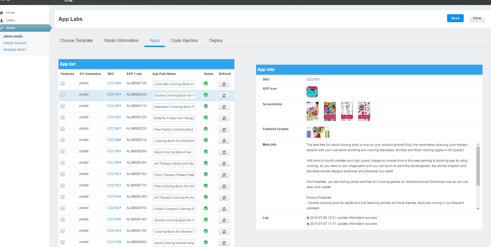
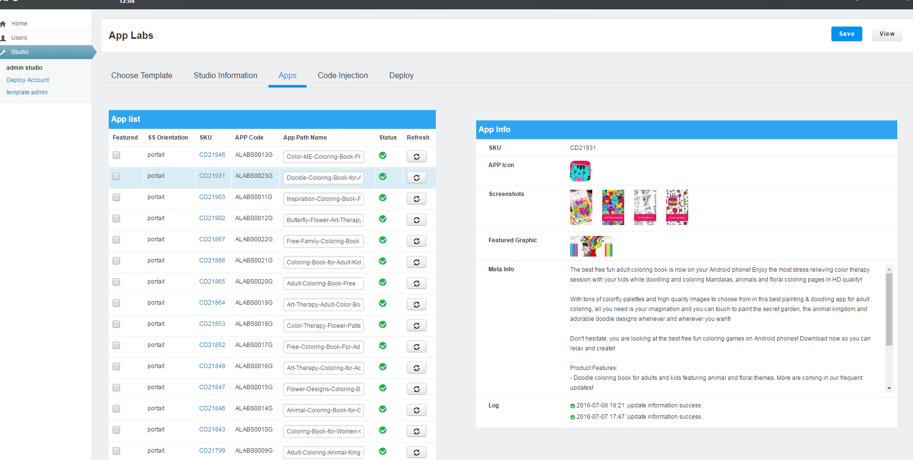

apg¶
全名为App webpage generator，作用是以studio为单位，自动生成静态的网站。
这里是一个自动生成的studio网站：http://www.applabsinc.net/
需求¶
目前公司有多个studio，每个studio对应一系列的app。项目的需求是以studio为单位，建立网站，可以提高SEO排名，也可以作为展示studio的一个平台。
APG系统捕捉PTS系统更新事件，从PTS系统提取相关信息，自动更新Studio网站信息。
全名为App webpage generator，作用是以studio为单位，自动生成静态的网站。
这里是一个自动生成的studio网站：http://www.applabsinc.net/
目前公司有多个studio，每个studio对应一系列的app。项目的需求是以studio为单位，建立网站，可以提高SEO排名，也可以作为展示studio的一个平台。
APG系统捕捉PTS系统更新事件，从PTS系统提取相关信息，自动更新Studio网站信息。
